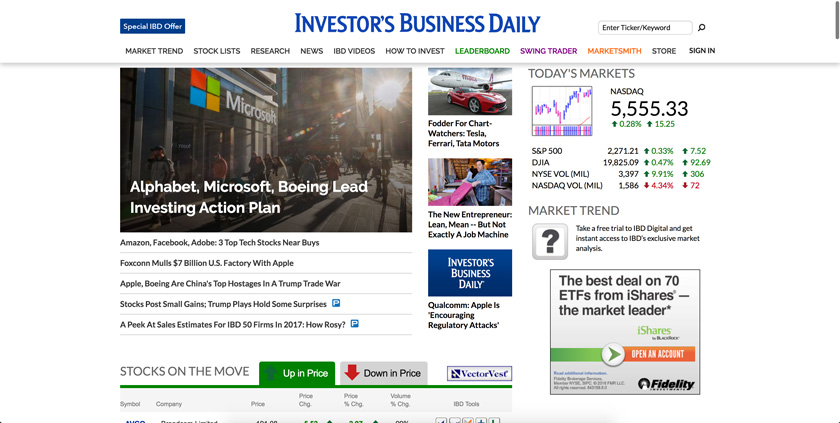
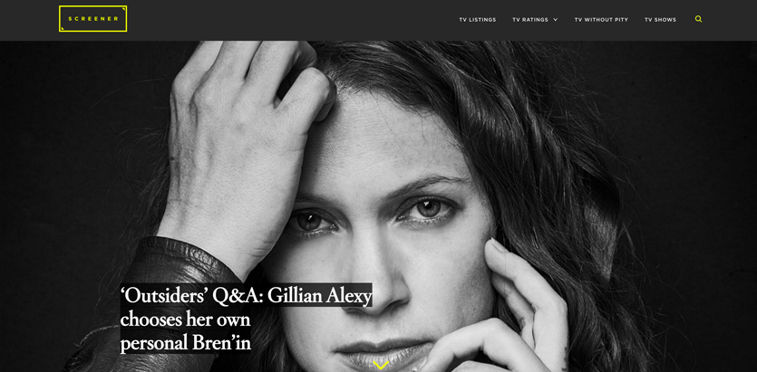
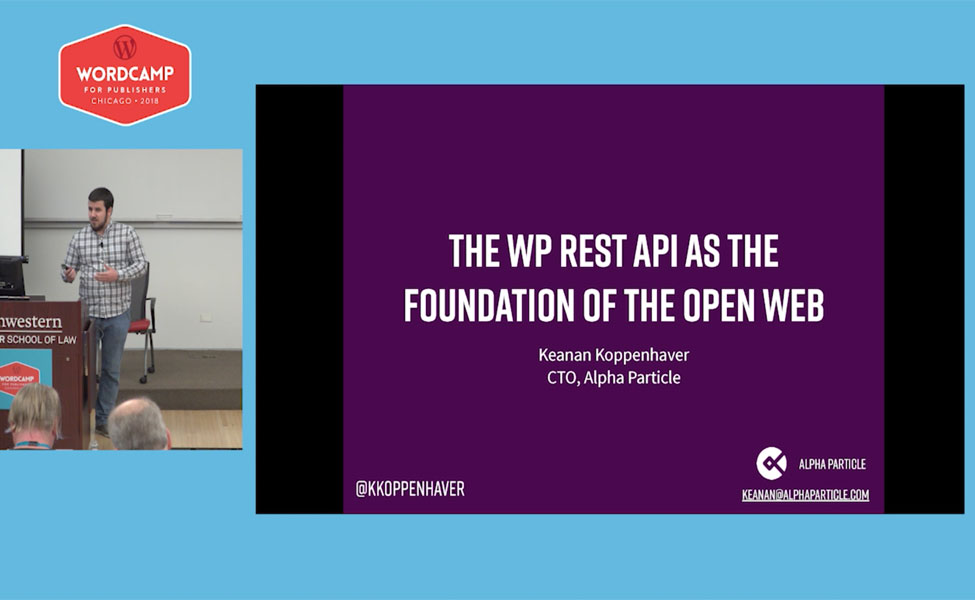
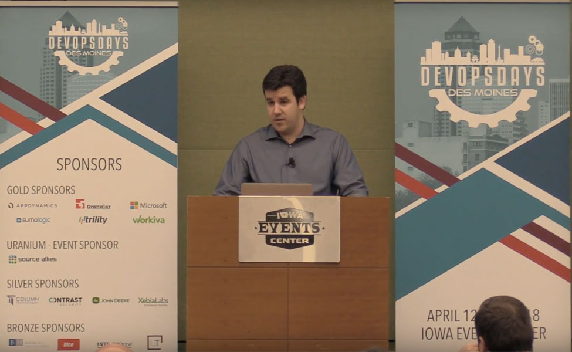
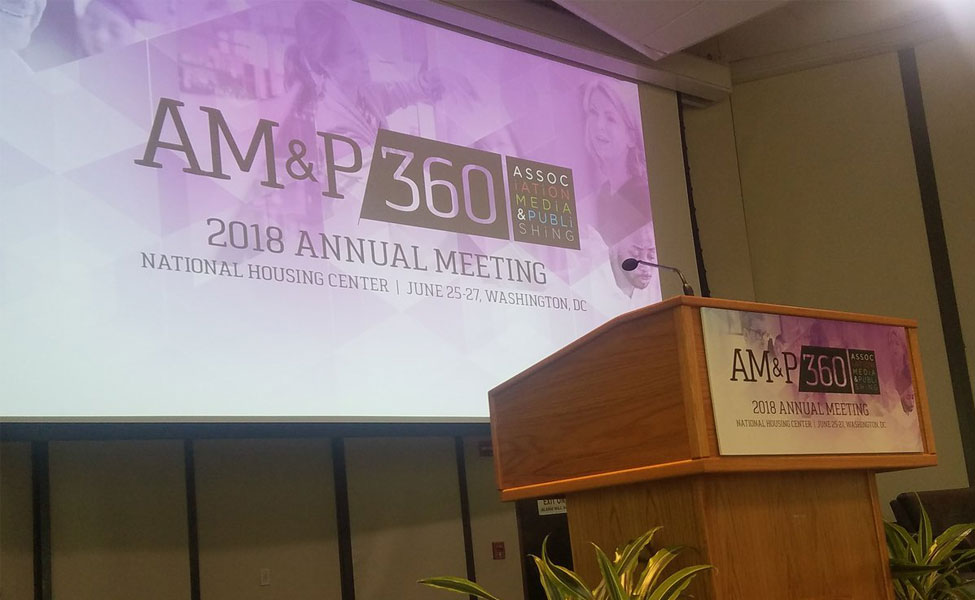
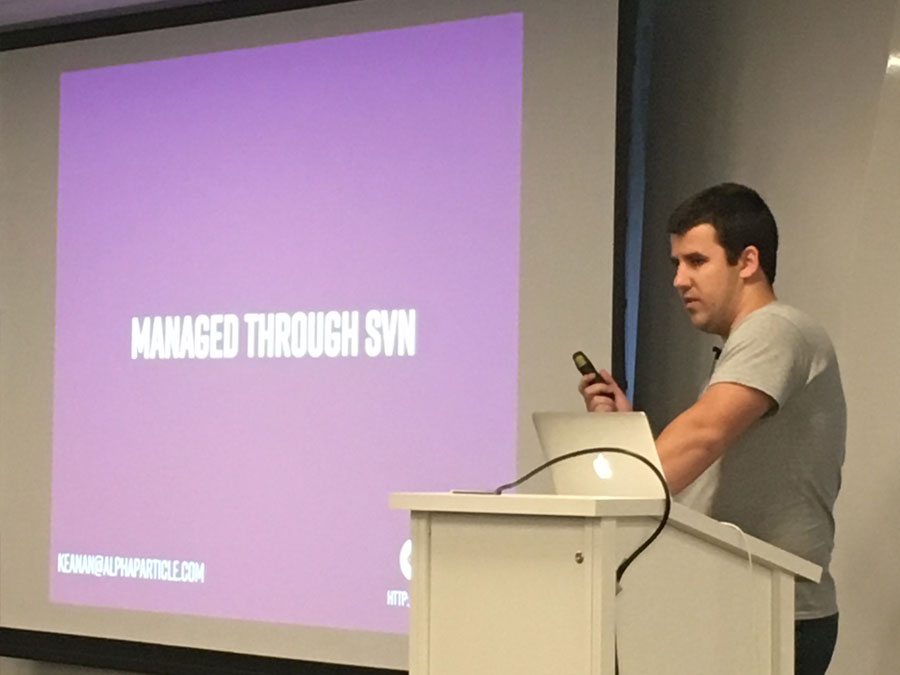

"When I give any programming or server task to our programmer Keanan he just goes and figures it out without having to ask me a bunch of questions or needing hand-holding. It’s amazing. Be like Keanan."
- Lowell Heddings, CEO, How-To Geek
I help businesses turn ideas into products and not get lost along the way.
As part of that process, I also lead dev teams, mentor junior developers, dabble in DevOps, speak at conferences and meetups and ship side projects.
Learn more by clicking any of the links above or get in touch directly and let's talk about your next project.
"When I give any programming or server task to our programmer Keanan he just goes and figures it out without having to ask me a bunch of questions or needing hand-holding. It’s amazing. Be like Keanan."
- Lowell Heddings, CEO, How-To Geek
"Any team fortunate enough to have Keanan with them is stronger. I would jump at any opportunity to work with him again without hesitation."
- Kenny Toffelmire, Team Lead, 10up
"[Keanan's] always up for a challenge and has solved many coding problems for me. I enjoy working him because he makes it so easy!"
- Nicole Hanusek, President, Smack Happy Design

Investor’s Business Daily (IBD) is a leader in the financial, economic, and political news sector. IBD and Doejo collaborated to create a streamlined workflow of content creation within an updated CMS and implemented lightning-fast, seamless integration of online publishing to print production. The front end received a facelift, including flexible page designs, allowing user-friendly layout updates on the fly.
A facelift of Tribune Media's popular Zap2It brand, Screener is the new home for TV news online. Running on the WordPress.com VIP platform, the modern site provides the same workflow for editors and contributors while enhancing the front end experience for end users.WPrint is an InDesign plugin that pulls WordPress post content into InDesign through the WordPress REST API. This improves on past solutions because the user doesn't have to leave Indesign to use their existing WordPress content.
View on GithubI have contributed code to recent WordPress releases, fixing bugs in both the Customizer and REST API. In addition, I have contributed to projects in the WordPress ecosystem such as WP-CLI.
Part of learning and participating in the software community is giving back to that same community. I'm proud to have had the opportunity to give back and share my knowledge through webinars and at meetups and conferences around the country.

The WordPress REST API allows you to support a wide variety of clients from mobile apps to voice interfaces to desktop apps to solutions that haven’t even been imagined yet. In this talk, we’ll explore: How the WP REST API can enable web to print workflows through InDesign, how to make your content more accessible through Google Home and Alexa, and even how your content can exist in virtual reality!

Introducing DevOps into a legacy development process can be tough. This talk will be a look at how we introduced a build system, updated version control practices and changed communication standards at a company with a decade old toolset and mindset. We’ll also examine how a fragile servers and rigid deploys were transitioned to a more fluid DevOps model. Together, these changes resulted in greater development velocity and a much smoother process from ticket to deploy.

At the Association Media and Publishing Annual Meeting, I was a part of panels: "Critic's Corner: 360-Degree Website Review" and "Where Technology Can Take You - and Your Reader". I was able to work with my fellow panelists to both evaluate existing association's websites, as well as provide guidance on where I see technology trends moving in the future for publishers.

When you identify a bug in WordPress, where does that information need to be reported? Who fixes it? And how does it eventually get sent out to 25% of the web in the next WordPress Core release? In this talk, we’ll look at the progression of a bug ticket from beginning to end and see how the software we use every day is continually improved.
The next generation of devices is here, and they’re all voice enabled. This talk will explore how voice search is influencing SEO and customer acquisition as well as how to adapt to give customers a viable voice-interface option to interact with your services. We interact with Alexa and Google Assistant live to see how they can take your WordPress site to the next level and provide a unique interface to your content.
It used to be that WordPress required a very different toolset than other types of modern PHP apps. In this talk, we'll look at how to modernize development of WordPress sites by using Bedrock to give us a modern stack, WP-CLI to interface with WordPress through the command line or even create scripts to run operations, and ways to deploy WordPress that are easier and more stable than FTP.
Open source software is taking the world by storm and by now, most of us use at least one open source tool every day. However, joining that community of people who use and contribute to open source tools can seem daunting. It doesn’t have to be! In this talk, we’ll dive into what open source software really is, how tools like Github make collaborating on software easy, and walk through an example of how you can contribute to the tools you use every day, without writing a line of code!
You find some blog posts on your site that you didn’t publish. Or you get an email from your host telling you your site is sending out spam email. You've been hacked. What now? In this talk, we covered everything from the basic steps to take to finding the affected portions of your site and removing the malicious code. We also touched on general security practices that can prevent breaches in the future.
WordPress now powers over 30% of sites on the web including big names such as Time, CNN, TechCrunch and more. What changes about a WordPress site when it needs to function on such a large scale? In this talk, we looked at how WordPress can be tweaked to serve content to millions of visitors per month, how to keep code modular using custom-built plugins, special considerations for enterprise-sized sites and more.
Everyone’s code has bugs. Luckily there are almost as many tools to help squash bugs as there are bugs to be squashed. In this talk, we took a detailed look at how to debug and fix some common issues associated with WordPress sites. We explored how Chrome’s Developer Tools can help us pinpoint front end bugs and used the Query Monitor plugin to see what was going on behind the scenes.
The Advanced Custom Fields (ACF) plugin is a powerful tool that allows you to extend the capabilities of WordPress admin without writing any additional code to create these fields. In this talk we explored how ACF allows you to offer additional functionality to your clients, how to use these new fields in your templates, and how to make sure you don’t go too far when adding fields.
Want to chat about something you don't see here?
Feel free to reach out anytime at k.koppenhaver@gmail.com